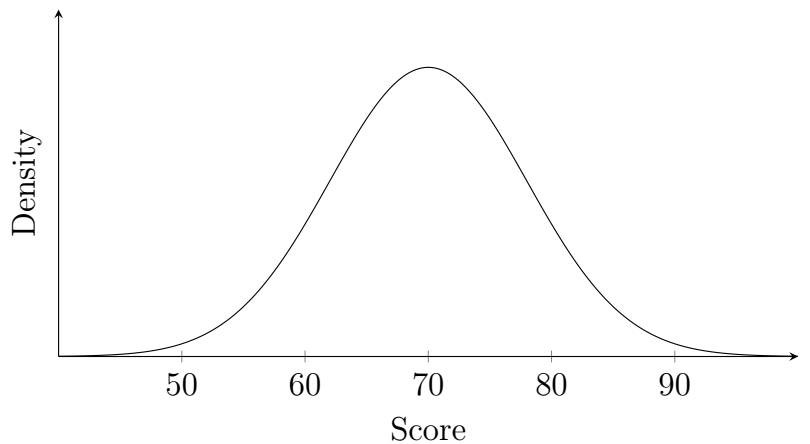
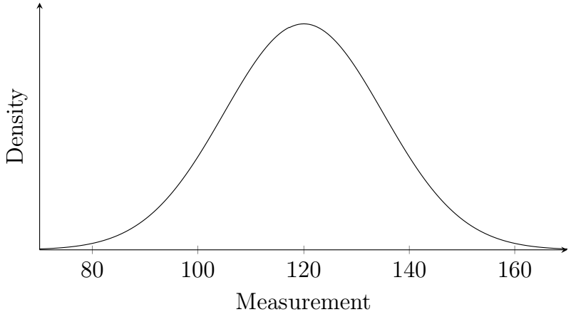

The following exercises review the major concepts introduced in this chapter. Show your work and simplify answers when appropriate.
Identify Normal Distributions
Consider the graph below.

Density curve for exercise 1.
Identify the approximate center and spread of the distribution. Does a normal model appear reasonable?
Consider the graph below.

Density curve for exercise 2.
Identify the approximate mean and standard deviation. Does the graph appear approximately normal?
Two normal distributions are shown conceptually below.
Two density curves for exercise 3.
Both distributions have the same center. Which distribution has the larger standard deviation? Explain how the graph shows this.
A distribution is strongly right-skewed, with a long tail extending toward larger values. Would a normal model be a reasonable model for this distribution? Explain.
Empirical Rule
Recall that for an approximately normal distribution:
\[68\%\text{ lie within }1\sigma,\qquad 95\%\text{ lie within }2\sigma,\qquad 99.7\%\text{ lie within }3\sigma.\]
Exam scores are approximately normally distributed with \(\mu=100, \sigma=15.\) Using the Empirical Rule, find the interval containing approximately \(68\%\) of the scores.
The weights of a population are approximately normal with \(\mu=72\text{ kg}, \sigma=6\text{ kg}.\) Find the interval containing approximately \(95\%\) of the observations.
Battery lifetimes are approximately normally distributed with \(\mu=500\text{ hours}, \sigma=40\text{ hours}.\) Find the interval containing approximately \(99.7\%\) of battery lifetimes.
A normal distribution has approximately \(95\%\) of its observations between 30 and 50. Estimate the mean and standard deviation.
\(z\)-Scores
Use \(z=\dfrac{x-\mu}{\sigma}.\)
A test has mean \(72\) and standard deviation \(6\). A student scores \(84\). Calculate and interpret the \(z\)-score.
A measurement has mean \(70\) and standard deviation \(8\). An observation is \(58\). Calculate the \(z\)-score and interpret its sign.
A student's score has a \(z\)-score of \(-1.50\). Is the student's score above or below the mean? How many standard deviations from the mean is the score?
A data value has a \(z\)-score of \(2.25\). Describe the location of the observation relative to the mean.
Convert \(z\) Back to \(x\)
Use \(x=\mu+z\sigma.\)
Test scores have \(\mu=70, \sigma=8.\) Find the score corresponding to \(z=1.50.\)
Heights have \(\mu=68\text{ in}, \sigma=3\text{ in}.\) Find the height corresponding to \(z=-2.\)
A measurement has \(\mu=120, \sigma=15.\) Find the measurement corresponding to \(z=0.80.\)
A test has \(\mu=500, \sigma=100.\) Find the score corresponding to \(z=-1.25.\)
Left-Tail Probabilities
Find each probability using the standard normal distribution.
\(P(Z<0.75)\)
\(P(Z<-1.25)\)
\(P(Z<1.50)\)
\(P(Z<-2.00)\)
Right-Tail Probabilities
Find each probability.
\(P(Z>1.20)\)
\(P(Z>-0.80)\)
\(P(Z>2.05)\)
\(P(Z>-1.75)\)
Between-Two-Values Probabilities
Find each probability.
\(P(-1<Z<1.50)\)
\(P(-1.50<Z<0.75)\)
\(P(-0.50<Z<2.00)\)
\(P(-2.00<Z<-0.50)\)
Percentiles
Test scores are normally distributed with \(\mu=70, \sigma=8.\) Find the score corresponding to the \(90\)th percentile.
Test scores are normally distributed with \(\mu=70, \sigma=8.\) Find the score corresponding to the \(25\)th percentile.
A measurement is normally distributed with \(\mu=70, \sigma=10.\) Find the measurement corresponding to the \(95\)th percentile.
Heights are normally distributed with \(\mu=100, \sigma=15.\) Find the height corresponding to the \(80\)th percentile.
Conditional Normal Probabilities
Let \(X\sim N(100,15^2).\) Find \(P(X>115\mid X>100).\)
The amount of sand in a container is normally distributed with \(\mu=50, \sigma=8.\) Find \(P(X<42\mid X<50).\)
Pigeon flight distances are normally distributed with \(\mu=200\text{ m}, \sigma=20\text{ m}.\) Find \(P(190<X<220\mid X>190).\)
Sand-particle diameters are normally distributed with \(\mu=70, \sigma=10.\) Find \(P(65<X<80\mid X>65).\)
A population has \(\mu=50, \sigma=12.\) A random sample of \(n=36\) observations is selected. Find \(\mu_{\bar X}\) and \(\sigma_{\bar X}\).
A population has mean \(80\) and standard deviation \(20\). Samples of size \(100\) are selected. Find the mean and standard deviation of the sampling distribution of \(\bar X\).
A population has \(\mu=200, \sigma=30.\) A sample of \(n=25\) is selected. Find \(P(\bar X>212).\)
A population has \(\mu=500, \sigma=60.\) A sample of \(n=36\) is selected. Find \(P(490<\bar X<515).\)
CLT Conceptual Questions
A researcher studies the heights of all students at a school. Is the collection of all student heights a population distribution, a sample distribution, or a sampling distribution?
A researcher randomly selects 40 students and records their heights. The resulting 40 observed heights form what type of distribution?
A researcher repeatedly selects samples of 40 students, calculates the mean height for each sample, and examines the distribution of those sample means. What type of distribution is being examined?
Explain the main idea of the Central Limit Theorem. Why is it useful even when the population distribution is not normal?
Normal Approximation to the Binomial
For the normal approximation to a binomial distribution, check whether the expected numbers of successes and failures are sufficiently large. Use the common condition
\[np\geq5\qquad\text{and}\qquad nq\geq5.\]
Determine whether a normal approximation is reasonable for \(n=40, p=0.50.\)
Determine whether a normal approximation is reasonable for \(n=20, p=0.10.\)
Determine whether a normal approximation is reasonable for \(n=100, p=0.08.\)
Determine whether a normal approximation is reasonable for \(n=200, p=0.60.\)
Continuity Correction
For a binomial random variable \(X\), use continuity correction when approximating with a continuous normal distribution.
Write the continuity-corrected normal interval for \(P(X=12).\)
Write the continuity-corrected normal interval for \(P(X\leq20).\)
Write the continuity-corrected normal interval for \(P(X\geq15).\)
Write the continuity-corrected normal interval for \(P(10\leq X\leq18).\)
Exact Binomial vs. Normal Approximation
For each problem, calculate the exact binomial probability and then calculate the normal approximation using continuity correction. Compare the two answers.
Let \(X\sim\operatorname{Binomial}(50,0.40).\) Find \(P(X=20)\) using:
the exact binomial calculation;
the normal approximation.
Let \(X\sim\operatorname{Binomial}(50,0.40).\) Find \(P(X\geq25)\) using both the exact binomial calculation and the normal approximation with continuity correction.
Let \(X\sim\operatorname{Binomial}(80,0.30).\) Find \(P(30\leq X\leq40)\) using both methods.
Let \(X\sim\operatorname{Binomial}(40,0.25).\) Find \(P(8\leq X\leq12)\) using both methods. Compare the exact probability with the approximation.
![Graph of two smooth, symmetric bell-shaped density curves on a horizontal axis labeled x that runs from 20 to 80; the vertical axis is labeled Density with no tick values. Both curves peak at the same x value. One curve is tall and narrow, and the other is lower and wider. Approximate heights of the tall, narrow curve: x = 20: about 0.000, x = 30: about 0.000, x = 40: about 0.011, x = 50: about 0.080, x = 60: about 0.011, x = 70: about 0.000, x = 80: about 0.000. Approximate heights of the lower, wider curve: x = 20: about 0.000, x = 30: about 0.005, x = 40: about 0.024, x = 50: about 0.040, x = 60: about 0.024, x = 70: about 0.005, x = 80: about 0.000.](images1/mth245_7_8_3.png)